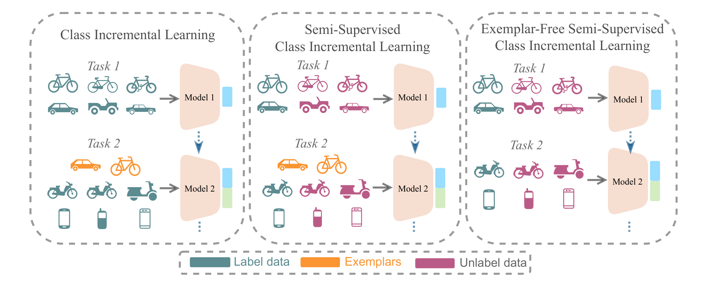
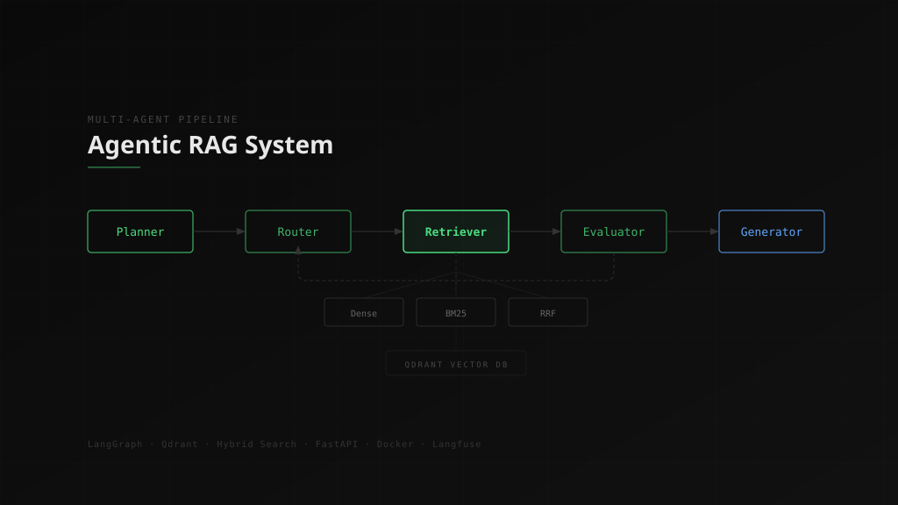
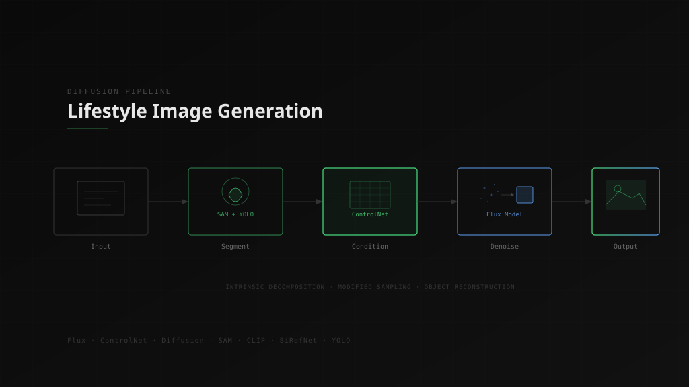
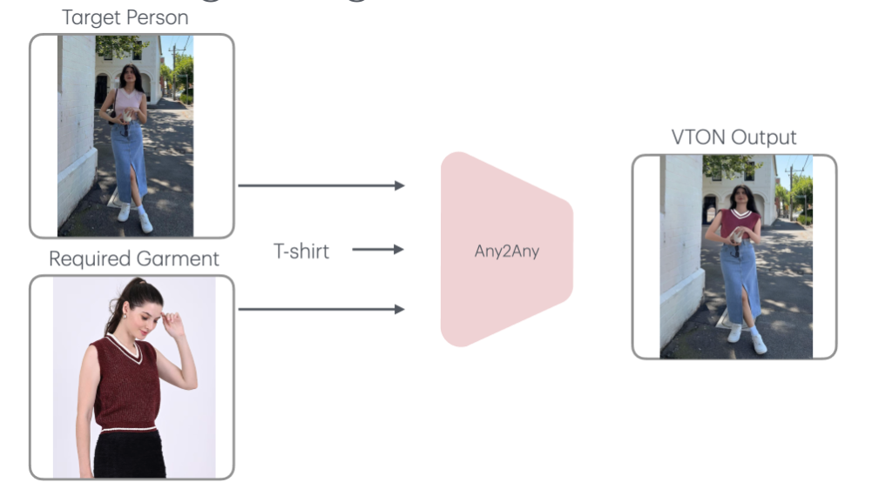

Bridging Computer Vision & LLMs in Production
I've trained CNNs to see and transformers to reason. Now I build systems where both work together - from diffusion pipelines shipping photorealistic product imagery at Avataar AI, to agentic AI pipelines at Armada AI. IISc Bangalore alumnus, GATE AIR 221.
From Signals to Neural Networks
My path to AI started in electrical engineering - clearing GATE (AIR 221) and BARC, then choosing research over a government job. That decision led me to IISc, where I published on continual learning (WACV 2025) and discovered my calling: building systems where vision and language work together.
Today, I ship AI that matters - diffusion pipelines at Avataar AI, agentic systems at Armada AI, and review research for CVPR & ECCV 2026. The boundary between what machines see and what they understand is blurring. I build at that edge.
Currently reading: Reinforcement Learning — exploring how agents learn to act optimally through interaction.
AI Engineer
- Architecting multi-agent RAG system with LangGraph orchestrating planner, router, retrieval, evaluation, and generation stages
- Built hybrid search combining dense embeddings, BM25 sparse vectors, and Reciprocal Rank Fusion over Qdrant with Jina reranking
- Developed ingestion pipeline: Playwright web scraping, Docling PDF extraction, and structure-aware chunking into Qdrant
- Shipping production stack with FastAPI, Chainlit UI, Langfuse observability, Docker Compose, and PostgreSQL
Research Engineer
- Built end-to-end lifestyle image generation pipeline using Flux Model and ControlNets
- Modified diffusion sampling for improved object reconstruction with intrinsic decomposition
- Developed classification systems using CLIP, BLIP2, and Qwen2.5 for low-data scenarios
- Enhanced segmentation accuracy with BiRefNet and SAM + YOLO-world integration
Teaching Assistant
- Integrated continual learning frameworks (L2P, DualPrompt) to mitigate catastrophic forgetting
- Built self-supervised models using MoCo and SimCLR for visual representation learning
- Developed adaptive prompt-based learning with dynamic token expansion
Teaching Assistant
- Developed DFT-based frequency domain filtering for image denoising and enhancement
- Implemented SIFT and Normalized Cut for feature detection and segmentation
- Optimized deep learning models using EfficientNet-B0 with custom classifiers


Agentic RAG System
Multi-agent RAG pipeline with LangGraph orchestrating planner, retriever, evaluator & generator stages. Hybrid search via dense + BM25 + RRF over Qdrant with Jina reranking.

Lifestyle Image Generation
End-to-end product image generation pipeline using Flux + ControlNets. Modified diffusion sampling with intrinsic decomposition for photorealistic object reconstruction.

TACLE: Task and Class-aware Exemplar-free Semi-supervised Class Incremental Learning
WACV 2025 Cited by 1
AI/ML
Frameworks & Tools
Infrastructure
M.Tech in Artificial Intelligence
Indian Institute of Science (IISc), Bangalore
2022 - 2024 · CGPA: 8.0/10.0
Pattern Recognition & Neural Networks, Computer Vision, Digital Image Processing, Deep Learning for NLP, LLMs for Practical NLP, Stochastic Models, Optimization
B.Tech in Electrical Engineering
Bhagalpur College of Engineering, Bhagalpur
2018 - 2021 · CGPA: 8.75/10.0
Diploma in Electrical Engineering
Government Polytechnic Muzaffarpur, Muzaffarpur
2015 - 2018 · 77.73%
Achievements & Certifications
Let's Build Something Together
Looking for collaboration on AI/ML projects, research opportunities, or just want to chat about generative models and agentic systems.
contact@rohit.vision